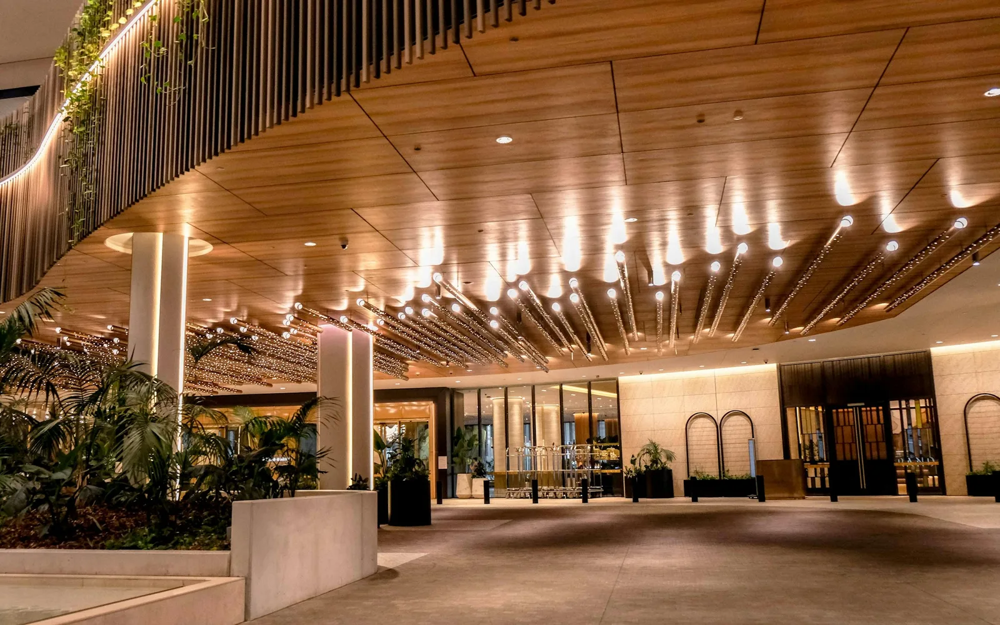
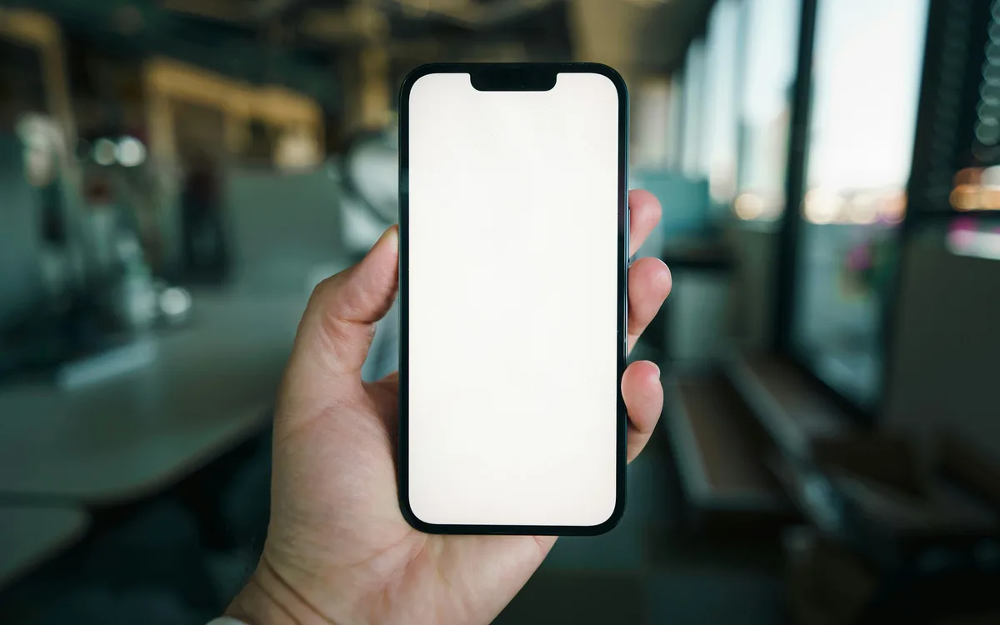

01
Environments & atmosphere
Design, sound, sensory cues, and biophilic elements in service spaces.
Consumer behavior · Research & education
Consumer behavior · Research · Education
Luana Nanu, Ph.D.
I study how environments, technology, and media shape what consumers perceive, feel, and decide. I also design courses and learning programs that turn research into practice.
Assistant Professor · University of South FloridaAbout Luana ↗Consumer behavior research & education
Research interests
01
Design, sound, sensory cues, and biophilic elements in service spaces.
02
Guest acceptance of AI, voice assistants, robots, and digital service, including older adults.
03
Social media content, AI influencers, video, menus, and how messages drive intention.
04
Booking choices, willingness to pay, tipping, and what makes experiences memorable.
From the research

An experimental study examined how a biophilic hotel lobby affected emotion, peace of mind, and willingness to pay.
Read the lobby design studyInternational Journal of Hospitality Management

A study of guests and hospitality practitioners found greater guest preference for human help with emotionally significant requests.
Read the AI concierge studyJournal of Hospitality and Tourism Technology
Photographs illustrate the research topics; they do not document the studies.
Education & program design
I build educational content and programs from the ground up, from needs assessment and curriculum design to materials, delivery, and evaluation.
Explore education & program design →About Luana
Assistant professor at USF, coordinator of the M3 Center for Hospitality Technology and Innovation, and co-author of Tourism: Concepts and Practices.
About Luana →Research & learning consultation
For organizations and research partners exploring consumer behavior, a technology decision, or a learning program, I can help define the question, design the work, and put it into practice.
Explore consultation →